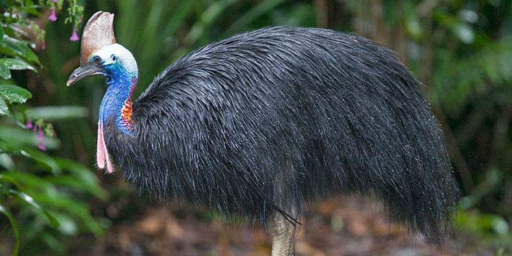

Southern Cassowary
AKA: Australian cassowary or Double-wattled cassowary. Scientific Name: Casuarius casuarius Family: Casuariidae Species: C. casuarius Speed: 50 km/h Length: 200 cm Mass: 25kg – 60kg Wing Span: 200 cm Life Span: 40 – 50 years Location: Northeastern Australia, Indonesia, and New Guinea. Diet: Feeds mostly on fruits. Also eats plants, carrion, and fungi as well as small vertebrates.
Appearance:
Glossy black plumage and a bright blue neck, with red coloring on the nape. Red colored skin hangs down from the throat. Powerful legs and long feet with 3 toes.
Facts:
- It is the second heaviest bird on earth.
- It got a name from the Papuan word meaning ‘horned head’.
- The female southern cassowary is dominant over the male. The male incubates the eggs and cares for the chicks.
- In New Guinea, it is one of important food source for some communities and as a result is heavily hunted.
- Consume an average of 2.9kg of fruit per day.